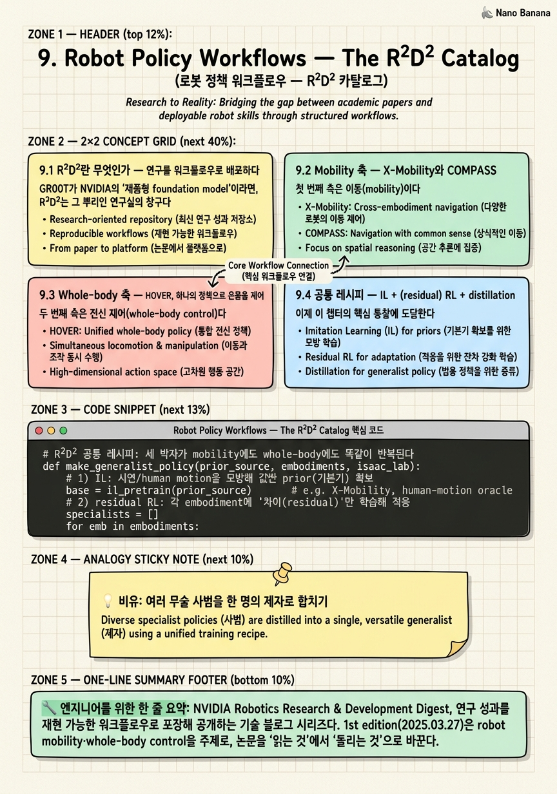
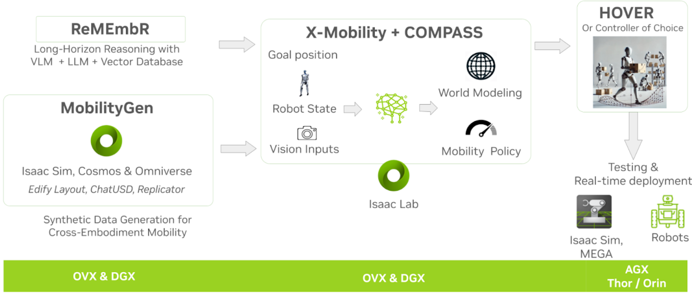
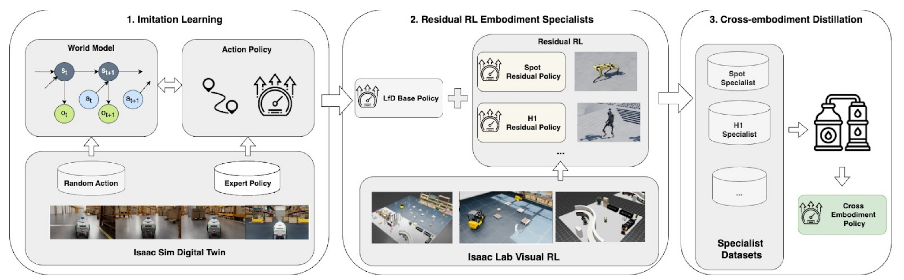
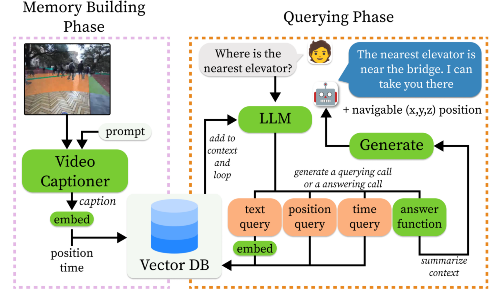

Robot Policy Workflows — The R²D² Catalog

🎯 학습 목표
- R²D²가 무엇이고 어떤 워크플로우를 담는지 안다
- COMPASS(mobility)와 HOVER(whole-body)의 역할 분담을 설명한다
- IL+residual RL+distillation이 반복되는 공통 레시피를 인식한다
- ReMEmbR의 VLM+RAG 기반 long-horizon memory를 이해한다
- 이 워크플로우들이 GR00T·Isaac Lab과 맞물리는 지점을 그린다
지난 챕터의 GR00T가 '하나의 거대 foundation model'이었다면, 이 챕터는 그 반대편 — NVIDIA Research가 구체적인 로봇 능력들을 어떻게 개별 워크플로우로 조립하는가 — 를 본다. 그 창구가 R²D²다.
R²D²(NVIDIA Robotics Research & Development Digest) = NVIDIA 로보틱스 연구 성과를 정리해 공개하는 기술 블로그 시리즈. 1st edition은 2025년 3월 27일 'robot mobility & whole-body control'을 주제로 나왔다. 스타워즈의 그 로봇 이름을 딴 말장난이자, 최신 연구 워크플로우의 '카탈로그' 역할을 한다.
이 카탈로그에는 네 개의 대표 워크플로우가 담긴다 — 이동을 담당하는 X-Mobility와 COMPASS(mobility), 전신 제어를 담당하는 HOVER(whole-body), 그리고 넓은 공간·긴 시간의 기억을 담당하는 ReMEmbR(memory/reasoning). 언뜻 제각각으로 보이는 이 넷을 이 챕터는 하나의 렌즈로 꿰뚫는다.
그 렌즈가 공통 레시피 — IL + (residual) RL + distillation이다. 모방학습(IL)으로 사전 지식을 확보하고, 강화학습(RL)으로 특정 몸체에 적응시키며, distillation으로 여러 전문가(specialist)를 하나의 만능 정책(generalist)으로 통합한다. 이 세 박자가 mobility에서도(COMPASS), whole-body에서도(HOVER) 똑같이 반복된다는 것을 알아채는 순간, 흩어진 논문들이 하나의 방법론으로 정렬된다. 이 챕터는 그 정렬을 목표로, 각 워크플로우를 mobility·whole-body·memory라는 세 축 위에 배치하고, 이들이 GR00T·Isaac Lab과 어떻게 맞물리는지로 마무리한다.
핵심 내용
9.1 R²D²란 무엇인가 — 연구를 워크플로우로 배포하다
GR00T가 NVIDIA의 '제품형 foundation model'이라면, R²D²는 그 뿌리인 연구실의 창구다.
R²D²(알투디투, NVIDIA Robotics Research & Development Digest) = NVIDIA Research의 로보틱스 연구 성과를 워크플로우 단위로 정리해 정기적으로 공개하는 기술 블로그 시리즈. 개별 논문을 '재현 가능한 워크플로우'로 포장해 개발자에게 전달하는 것이 목적이다.
1st edition은 2025년 3월 27일 'robot mobility & whole-body control'을 주제로 발간됐다. 즉 첫 호의 초점은 로봇이 '어떻게 이동하고(mobility)', '어떻게 온몸을 제어하는가(whole-body control)'였다.
왜 '워크플로우'라는 단위가 중요한가? 학술 논문은 보통 'method + 실험 결과'로 끝나, 실제 개발자가 자기 로봇에 적용하기까지 큰 간극이 있다. R²D²는 이 간극을 좁히려 각 연구를 '어떤 데이터로, 어떤 시뮬에서, 어떻게 학습하고, 어디에 배치하는가'라는 실전 파이프라인으로 재구성한다. 논문을 '읽는 것'에서 '돌리는 것'으로 바꾸는 셈이다.
R²D²에 담긴 네 워크플로우를 세 축으로 미리 지도화하면 다음과 같다.
| 축 | 워크플로우 | 담당 능력 |
|---|---|---|
| mobility(이동) | X-Mobility, COMPASS | 환경을 인식하고 목적지로 이동 |
| whole-body(전신) | HOVER | 걷기·조작을 아우르는 온몸 제어 |
| memory/reasoning(기억·추론) | ReMEmbR | 넓은 공간·긴 시간의 기억 기반 질의·내비게이션 |
이 세 축은 서로를 배제하지 않고 보완한다 — 로봇이 쓸모 있으려면 이동할 줄 알고(mobility), 온몸을 조율하며(whole-body), 어디서 무엇을 봤는지 기억해야(memory) 하기 때문이다. R²D² 카탈로그는 이 세 능력의 조각들을 하나씩 채워 넣는 프로젝트다. 그리고 이 조각들을 만드는 방법에는 놀랍도록 일관된 패턴이 있는데, 그것이 9.4절의 공통 레시피다.

9.2 Mobility 축 — X-Mobility와 COMPASS
첫 번째 축은 이동(mobility)이다. 여기 두 워크플로우가 계층을 이룬다 — 토대인 X-Mobility와, 그 위에 세워진 COMPASS.
X-Mobility(엑스모빌리티)(arXiv:2410.17491) = 비전 기반 end-to-end 모방학습(IL) mobility foundation. 카메라 입력에서 곧장 이동 행동을 내는 구조로, 환경 상식(world dynamics·obstacle avoidance·path planning)을 학습한다.
X-Mobility의 핵심은 '환경에 대한 상식'을 통째로 배운다는 점이다 — 세계가 어떻게 움직이는지(world dynamics), 장애물을 어떻게 피하는지(obstacle avoidance), 목적지까지 경로를 어떻게 잡는지(path planning)를 vision에서 end-to-end로 익힌다. 이렇게 학습된 X-Mobility가 다음 단계인 COMPASS의 토대(base)가 된다.
COMPASS(컴패스)(arXiv:2502.16372) = cross-embodiment mobility 워크플로우. X-Mobility(IL)를 base로 삼아, residual RL(Isaac Lab에서)로 각 몸체에 적응시키고, policy distillation으로 하나의 정책에 통합한다.
COMPASS가 mobility 축의 핵심인 이유는 cross-embodiment에 있다. 하나의 mobility 정책이 서로 다른 이동 방식의 로봇들을 아우른다.
- Nova Carter: 바퀴로 굴러가는 wheeled 로봇
- H1·G1: 두 발로 걷는 humanoid
- Spot: 네 발로 걷는 quadruped
바퀴·두 발·네 발은 이동 물리가 근본적으로 다른데, COMPASS는 이들을 하나의 워크플로우로 다룬다. 그 결과 성능도 극적이어서, 이전 대비 성공률 5배(5x success rate)를 달성했고, 최종 정책은 Jetson에 배치된다. 즉 COMPASS는 이 코스의 스택(학습 Isaac Lab → 배치 Jetson)을 그대로 따르는 mobility의 모범 사례다.
중요한 안내 — COMPASS는 이미 별도의 심화 코스로 다뤄진다. cross-embodiment 학습의 세부(IL·residual RL·distillation의 구체적 조립, Cosmos-Transfer로 rendering gap 메우기 등)가 궁금하다면 COMPASS 코스를 참고하라. 이 챕터는 COMPASS를 'R²D² 카탈로그의 mobility 대표'라는 지도상 위치로만 다룬다.

9.3 Whole-body 축 — HOVER, 하나의 정책으로 온몸을 제어
두 번째 축은 전신 제어(whole-body control)다. 걷는 것과 손으로 조작하는 것은 전혀 다른 문제처럼 보이지만, 실제 휴머노이드는 이 둘을 하나의 몸으로 동시에 해내야 한다. 그 통합을 담당하는 워크플로우가 HOVER다.
HOVER(호버, Humanoid Versatile Controller) = 휴머노이드의 whole-body control을 담당하는 워크플로우. 여러 제어 모드를 단일 신경 정책(single neural policy)으로 통합한다.
HOVER의 핵심은 서로 다른 두 제어 모드를 하나로 합쳤다는 데 있다.
-
velocity tracking(속도 추종): 원하는 이동 속도를 따라가는 모드 — 내비게이션(navigation), 즉 걸어서 어딘가로 가는 데 쓴다.
-
joint tracking(관절 추종): 원하는 관절 자세를 정밀하게 따라가는 모드 — manipulation, 즉 손으로 물체를 다루는 데 쓴다.
이 둘을 왜 하나의 정책으로 합쳐야 하는가? 걷다가 멈춰 물건을 집고 다시 걷는 자연스러운 동작을 하려면, '이동 모드'와 '조작 모드' 사이를 매끄럽게 전환할 수 있어야 하기 때문이다. 두 개의 분리된 컨트롤러를 스위치로 바꾸면, 전환 순간에 균형을 잃기 쉽다. HOVER는 multi-mode policy distillation으로 두 모드를 단일 정책에 녹여, 모드 전환 시에도 균형을 유지한다.
학습 방식이 이 챕터의 공통 레시피를 예고한다. HOVER는 먼저 human motion(인간 동작 데이터)으로 oracle을 학습한다 — 사람의 자연스러운 전신 동작을 잘 흉내 내는, 각 모드에 특화된 '스승(oracle)' 정책을 만드는 것이다. 그다음 이 여러 oracle의 능력을 하나의 generalist(범용 정책)로 distill(증류)한다. 즉 '특화된 여러 전문가 → 하나의 만능 정책'이라는 흐름이다.
배치 경로도 스택을 따른다 — Isaac Lab에서 학습하고, MuJoCo에서 테스트(sim-to-sim 검증)한 뒤, Jetson에 배치한다. Isaac Lab에서 배운 정책을 다른 물리 엔진(MuJoCo)에서 한 번 더 검증하는 것은, 특정 시뮬에 과적합하지 않았는지 확인하는 견고성 점검이다. 정리하면 HOVER는 whole-body 축에서 'human motion oracle → generalist distillation → Jetson 배치'라는, mobility의 COMPASS와 놀랍도록 닮은 골격을 보여준다.
9.4 공통 레시피 — IL + (residual) RL + distillation
이제 이 챕터의 핵심 통찰에 도달한다. X-Mobility·COMPASS·HOVER를 각각 보면 별개의 연구지만, 한 걸음 물러서면 동일한 세 박자 레시피가 반복된다.
공통 레시피 = ① IL로 사전 지식(prior) 확보 → ② (residual) RL로 특정 embodiment에 적응 → ③ distillation으로 여러 specialist를 하나의 generalist로 통합.
각 단계가 왜 필요한지 그 논리를 뜯어보자.
① IL(Imitation Learning, 모방학습)로 prior 확보 — 아무것도 모르는 상태에서 RL을 처음부터 돌리면 탐색이 비효율적이고 위험하다. 그래서 먼저 시연(demonstration)이나 human motion을 모방해 '대충 그럴듯한' 기본기를 심는다. COMPASS의 X-Mobility base, HOVER의 human motion oracle이 모두 이 IL 단계다. 세상에 대한 상식적 prior를 값싸게 확보하는 출발점이다.
② (residual) RL로 embodiment 적응 — IL로 얻은 prior는 특정 로봇의 몸에 완벽히 맞지 않는다. 여기서 강화학습이 그 간극을 메운다. 특히 residual RL은 IL 정책을 통째로 다시 배우는 게 아니라, 그 위에 '보정치(residual)'만 RL로 학습한다 — 이미 좋은 base가 있으니 차이만 학습하는 것이 훨씬 효율적이고 안정적이다. 이 RL은 대량 병렬 시뮬이 가능한 Isaac Lab에서 이뤄진다(Chapter 4).
③ distillation으로 specialist → generalist 통합 — 각 embodiment나 각 모드마다 특화된 정책(specialist)이 여럿 생긴다. distillation은 이 여러 전문가의 능력을 하나의 신경망(generalist)에 압축해 담는다. COMPASS는 여러 몸체의 mobility를, HOVER는 velocity·joint tracking 두 모드를 각각 하나로 distill한다.
이 레시피가 강력한 이유는 모듈성이다. 새로운 로봇이나 새로운 능력이 필요하면, prior(IL)를 재활용하고 → RL로 그 몸에만 적응시키고 → 기존 generalist에 distill해 넣으면 된다. 처음부터 다시 학습할 필요가 없다. 그리고 세 축이 서로 보완한다 — mobility(COMPASS)·whole-body(HOVER)·memory(ReMEmbR)가 같은 레시피로 만들어지므로, 언젠가 하나의 로봇 안에서 조립될 수 있는 호환 가능한 부품들이 된다. 서로 다른 논문이 아니라, 하나의 방법론이 낳은 형제들인 셈이다.
9.5 Memory 축 — ReMEmbR, 그리고 GR00T·WFM으로의 연결
세 번째 축은 기억과 추론(memory/reasoning)이다. mobility와 whole-body가 '지금 이 순간'의 제어라면, ReMEmbR은 '넓은 공간과 긴 시간'을 다룬다.
ReMEmbR(리멤버, Retrieval-augmented Memory for Embodied Robots) = LLM + VLM + RAG(Retrieval-Augmented Generation)를 결합해, 로봇이 넓은 공간·긴 시간에 걸친 기억을 바탕으로 추론·질의응답·내비게이션을 하도록 하는 워크플로우.
ReMEmbR의 작동은 두 단계로 나뉜다.
-
memory-building(기억 구축): 로봇이 돌아다니며 본 것을 embedding으로 변환해 저장한다. 시각적 관찰이 검색 가능한 기억 은행에 차곡차곡 쌓인다.
-
querying(질의): 사람이 자연어로 '아까 부엌에서 본 빨간 가방 어디 있었지?' 같은 질문을 하면, RAG가 관련 기억을 검색해 오고 LLM이 그를 바탕으로 답을 생성하거나 목적지로 안내한다.
왜 RAG인가? 로봇이 몇 시간을 돌아다니면 관찰이 방대해져, 모든 것을 LLM의 context에 넣을 수 없다. RAG는 '필요할 때 관련 기억만 검색해 온다'는 방식으로 이 long-horizon 문제를 푼다 — LLM 세계에서 방대한 문서를 다루는 바로 그 기법을, 로봇의 시공간 기억에 적용한 것이다. 이 능력을 평가하기 위해 NaVQA(Navigation VQA) 데이터셋도 함께 제시됐다 — 내비게이션 맥락의 시각 질의응답 벤치마크다.
ReMEmbR이 세 축을 완성하는 이유는 명확하다. 아무리 잘 이동하고(mobility) 온몸을 제어해도(whole-body), '어디서 무엇을 봤는지' 기억하지 못하면 로봇은 매 순간 백지 상태다. memory 축이 있어야 로봇이 오래 일하며 맥락을 쌓는 존재가 된다.
마지막으로 이 R²D² 카탈로그가 어디로 이어지는지 짚자. 1st edition이 mobility·whole-body였다면, 2nd R²D²는 'Training Generalist Robots with World Foundation Models'를 주제로, GR00T-Dreams/Mimic 중심의 데이터 생성으로 옮겨간다. 즉 R²D²의 서사는 '개별 능력 워크플로우(1st)'에서 '그 워크플로우들을 먹여 키울 데이터를 WFM으로 대량 생성(2nd)'으로 자연스럽게 진화한다. 여기서 이 코스의 챕터들이 하나로 수렴한다 — R²D²의 공통 레시피(IL+RL+distill)로 만든 정책들이, GR00T(Chapter 8)라는 foundation model로 흡수되고, 그 학습 데이터는 Cosmos·GR00T-Dreams(Chapter 5·7)가 대고, 학습은 Isaac Lab(Chapter 4)에서, 배치는 Jetson(Chapter 12)에서 이뤄진다. R²D²는 이 거대한 스택을 '연구 워크플로우'라는 관점에서 다시 보여주는 카탈로그다.

💡 비유로 이해하기
R²D²의 공통 레시피를 이해하려면, 만능 무도인 한 명을 키우는 과정을 떠올리면 된다. 처음부터 제자를 맨몸으로 실전에 던지면 다치기만 할 뿐 배우는 게 느리다. 그래서 먼저 기본 품새를 보고 따라 하게(IL, 모방학습) 한다 — 스승의 동작을 흉내 내며 '대충 그럴듯한' 기본기를 값싸게 익힌다. X-Mobility가 이동의 기본기를, human motion oracle이 전신 동작의 기본기를 심는 단계다.
하지만 흉내만으로는 이 제자만의 몸(팔 길이, 다리 힘)에 딱 맞지 않는다. 그래서 실전 스파링으로 자기 몸에 맞게 미세 보정(residual RL)한다. 처음부터 다시 배우는 게 아니라, 기본기에서 벗어나는 '차이(residual)'만 시행착오로 다듬는다 — 이미 좋은 토대가 있으니 효율적이다. 이 스파링은 다칠 걱정 없는 가상 도장(Isaac Lab)에서 무한히 반복한다.
그런데 이 제자에게는 각 분야의 전문 사범이 여럿 있다 — 발놀림 사범(mobility·velocity tracking), 손기술 사범(manipulation·joint tracking), 기억력 사범(ReMEmbR). 각자 자기 분야만 잘한다. 진짜 고수라면 이 모두를 한 몸에서 매끄럽게 써야 하고, 특히 발놀림에서 손기술로 넘어가는 순간 균형을 잃으면 안 된다(HOVER의 모드 전환). 그래서 마지막에 여러 사범의 기예를 한 명의 제자에게 증류(distillation)한다 — 여러 전문가를 하나의 만능 정책으로 압축하는 것이다.
이 세 박자 — 따라 하기(IL) → 내 몸에 맞추기(RL) → 여럿을 하나로 합치기(distill) — 가 이동이든 전신 제어든 똑같이 반복된다. 그래서 COMPASS와 HOVER는 다른 논문이지만 형제처럼 닮았다. 그리고 이렇게 길러낸 만능 제자들이 훗날 GR00T라는 대사부의 몸에 흡수되고, 그 수련에 쓸 무한한 연습 상대는 Cosmos가 상상으로 만들어낸다. R²D²는 이 수련법 전체를 정리한 무술 교본인 셈이다.
💻 코드 예시
R²D²를 관통하는 공통 레시피(IL → residual RL → distillation)를 개념 코드로 표현한다. 실제 API가 아니며, 요점은 'COMPASS(mobility)와 HOVER(whole-body)가 서로 다른 능력임에도 동일한 세 박자 함수로 조립된다'는 것이다.
# R²D² 공통 레시피: 세 박자가 mobility에도 whole-body에도 똑같이 반복된다
def make_generalist_policy(prior_source, embodiments, isaac_lab):
# 1) IL: 시연/human motion을 모방해 값싼 prior(기본기) 확보
base = il_pretrain(prior_source) # e.g. X-Mobility, human-motion oracle
# 2) residual RL: 각 embodiment에 '차이(residual)'만 학습해 적응
specialists = []
for emb in embodiments:
expert = residual_rl(base, embodiment=emb, sim=isaac_lab) # Isaac Lab에서
specialists.append(expert) # 몸체(또는 모드)별 전문가
# 3) distillation: 여러 specialist를 하나의 generalist로 통합
generalist = distill(specialists) # 처음부터 다시 안 배움
return generalist
# --- 인스턴스 1: COMPASS (mobility 축) ---
compass = make_generalist_policy(
prior_source="x-mobility", # 비전 기반 IL foundation이 base
embodiments=["nova_carter", "h1", "g1", "spot"], # wheeled/humanoid/quadruped
isaac_lab=IsaacLab()) # -> 5x success rate, Jetson 배치
# --- 인스턴스 2: HOVER (whole-body 축) ---
hover = make_generalist_policy(
prior_source="human_motion", # human motion oracle이 base
embodiments=["velocity_tracking", "joint_tracking"], # nav vs manipulation 모드
isaac_lab=IsaacLab()) # -> 단일 정책, MuJoCo 검증 후 Jetson
deploy_to_jetson([compass, hover]) # 스택: Isaac Lab 학습 -> Jetson 배치핵심은 make_generalist_policy 하나가 COMPASS와 HOVER 둘 다를 만든다는 점이다 — 서로 다른 능력이 같은 레시피의 인스턴스임을 코드가 드러낸다. (1) il_pretrain은 시연/human motion을 모방해 값싼 prior를 심는다(COMPASS는 x-mobility, HOVER는 human_motion oracle). (2) residual_rl은 각 embodiment(또는 모드)에 대해 base 위의 '차이'만 학습한다 — 통째로 재학습하지 않으므로 효율적이고, 대량 병렬이 가능한 Isaac Lab에서 돈다. embodiments 리스트만 바꾸면 COMPASS는 wheeled·humanoid·quadruped를, HOVER는 velocity·joint tracking 모드를 다룬다. (3) distill이 이 여러 specialist를 하나의 generalist로 압축한다. 맨 아래 deploy_to_jetson이 '학습(Isaac Lab)→배치(Jetson)'라는 스택을 그대로 보여준다. 같은 함수가 mobility와 whole-body를 낳는다는 사실이, R²D²의 흩어진 워크플로우들이 실은 하나의 방법론임을 증명한다.
🏭 현업에서의 평가
✅ 시니어가 보는 것
- R²D²를 'NVIDIA Research의 워크플로우 카탈로그'로 규정하고, 담긴 연구들을 mobility(X-Mobility·COMPASS)·whole-body(HOVER)·memory(ReMEmbR) 세 축으로 배치하는가
- 공통 레시피 IL(prior 확보) → residual RL(embodiment 적응, Isaac Lab) → distillation(specialist를 generalist로 통합)을 인식하고, 왜 각 단계가 필요한지(RL을 처음부터 안 돌리는 이유, residual의 효율성) 설명하는가
- COMPASS의 cross-embodiment(wheeled/humanoid/quadruped를 한 정책, X-Mobility base, 5x success rate)와 HOVER의 multi-mode 통합(velocity vs joint tracking을 단일 정책, 모드 전환 시 균형 유지)의 역할 분담을 구분하는가
- ReMEmbR의 VLM+LLM+RAG 기반 long-horizon memory — memory-building(embedding 저장)·querying(자연어 생성) 2단계 — 가 왜 RAG로 풀리는지 이해하는가
- 이 워크플로우들이 GR00T·Isaac Lab·Jetson 스택과 맞물리고, 2nd R²D²가 WFM 기반 데이터 생성(GR00T-Dreams)으로 이어짐을 그리는가
⚠️ 레드 플래그
- 네 워크플로우를 개별 논문으로만 나열하고, IL+RL+distillation이라는 공통 레시피로 꿰뚫지 못하는 경우
- COMPASS(mobility, cross-embodiment)와 HOVER(whole-body, multi-mode)의 역할을 혼동하거나, HOVER가 velocity·joint tracking을 단일 정책으로 통합하는 이유(모드 전환 균형)를 놓치는 경우
- residual RL을 일반 RL과 구분하지 못하거나, distillation이 specialist→generalist 통합임을 설명하지 못하는 경우
- ReMEmbR을 단순 '로봇 챗봇'으로 보고, RAG가 long-horizon 관찰을 다루기 위한 검색 기법임을 놓치는 경우
- COMPASS가 이미 별도 코스로 존재함을 모르거나, 이 워크플로우들이 GR00T·Isaac Lab 스택과 맞물리는 지점을 그리지 못하는 경우
🎤 예상 인터뷰 질문
- Q1 (구조): R²D²가 무엇이며 어떤 워크플로우를 담는지 설명하라. X-Mobility·COMPASS·HOVER·ReMEmbR을 mobility·whole-body·memory 세 축에 배치하고 각 축이 왜 필요한지 논하라.
- Q2 (레시피): COMPASS와 HOVER가 서로 다른 능력임에도 공유하는 공통 레시피(IL→residual RL→distillation)를 설명하라. 각 단계가 왜 필요한가? residual RL이 일반 RL과 다른 점과, distillation으로 여러 specialist를 하나로 합치는 이유는?
- Q3 (memory): ReMEmbR이 long-horizon memory를 어떻게 다루는지 설명하라. memory-building과 querying 2단계는 무엇이며, 왜 RAG를 쓰는가? 이것이 mobility·whole-body 워크플로우를 어떻게 보완하는가?
✨ 핵심 요약
R²D²는 NVIDIA Research의 워크플로우 카탈로그다
NVIDIA Robotics Research & Development Digest, 연구 성과를 재현 가능한 워크플로우로 포장해 공개하는 기술 블로그 시리즈다. 1st edition(2025.03.27)은 robot mobility·whole-body control을 주제로, 논문을 '읽는 것'에서 '돌리는 것'으로 바꾼다.
세 축 — mobility·whole-body·memory
X-Mobility·COMPASS가 이동(mobility), HOVER가 전신 제어(whole-body), ReMEmbR이 기억·추론(memory)을 담당한다. 세 능력은 서로를 배제하지 않고 보완한다 — 쓸모 있는 로봇은 이동하고, 온몸을 조율하며, 본 것을 기억해야 한다.
COMPASS — cross-embodiment mobility
X-Mobility(비전 IL foundation)를 base로, residual RL(Isaac Lab)과 policy distillation으로 Nova Carter(wheeled)·H1·G1(humanoid)·Spot(quadruped)을 한 정책에 통합해 5x success rate를 달성, Jetson에 배치한다. 세부는 별도 [COMPASS 코스](/posts/compass-cross-embodiment/) 참조.
HOVER — 하나의 정책으로 온몸을 제어
Humanoid Versatile Controller. velocity tracking(navigation)과 joint tracking(manipulation)을 단일 신경 정책으로 통합해, 모드 전환 시에도 균형을 유지한다. human motion으로 oracle을 학습한 뒤 generalist로 distill하고, Isaac Lab 학습·MuJoCo 검증·Jetson 배치를 거친다.
공통 레시피 — IL + residual RL + distillation
① IL로 값싼 prior 확보 → ② residual RL로 embodiment에 '차이'만 적응(Isaac Lab) → ③ distillation으로 여러 specialist를 하나의 generalist로 통합. 이 세 박자가 COMPASS(mobility)에도 HOVER(whole-body)에도 똑같이 반복된다.
왜 세 박자인가 — 효율과 모듈성
RL을 맨바닥에서 돌리면 위험·비효율적이라 IL prior로 출발하고, residual RL은 base를 재학습하지 않고 차이만 배워 효율적이며, distillation은 전문가들을 재사용 가능한 하나의 정책으로 압축한다. 새 로봇·능력은 prior 재활용→적응→distill로 처음부터 다시 안 배운다.
ReMEmbR — RAG로 long-horizon memory를 풀다
LLM+VLM+RAG로, memory-building(관찰을 embedding으로 저장)과 querying(자연어 질의·생성) 2단계로 넓은 공간·긴 시간의 기억 기반 추론·내비게이션을 한다. 방대한 관찰을 context에 다 못 넣으니 필요한 기억만 검색하는 RAG가 핵심이다. NaVQA 데이터셋으로 평가한다.
R²D²는 GR00T·WFM으로 수렴한다
공통 레시피로 만든 정책들은 GR00T foundation model에 흡수되고, 데이터는 Cosmos·GR00T-Dreams가, 학습은 Isaac Lab이, 배치는 Jetson이 맡는다. 2nd R²D²는 'Training Generalist Robots with WFMs'로 옮겨가, 개별 능력에서 WFM 기반 데이터 생성으로 서사가 진화한다.